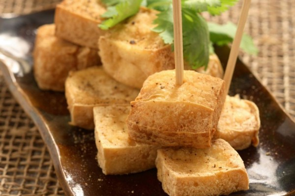

Tahu Takwa
Adanya tahu di Kediri tak lepas dari migrasi orang Tiongkok ke Kediri. Pada tahun 1900 terjadi migrasi besar orang Tiongkok ke Indonesia.
Salah satu warga Tiongkok yang mempelopori berdirinya pabrik tahu adalah Lauw Soe Hoek atau disebut Bah Kacung.
Selama enam bulan beliau mencoba meramu tahu yang pas untuk dijual.
Semakin pesat usaha beliau, semakin menarik hati kawan-kawannya yang lain untuk membuat pabrik tahu di Kediri.
Usaha tahu takwa tersebut langgeng dari generasi ke generasi.

Warna kuning yang menjadi khas tahu takwa
Pembuatan tahu takwa di masa Bah Kacung ini membutuhkan trial and error.
Pasar di Tiongkok dan di Kediri tentu berbeda, hal tersebut membuat Bah Kacung berinovasi dengan produk tahunya agar dapat diterima oleh lidah orang Indonesia, khususnya warga Kediri.
Beliau pun memadukan tahu dengan rempah-rempah dengan bahan dasar pencampuran dari kunyit.
Sehingga warna kuning di tahu takwa adalah warna alami dari kunyit.

Nutrisi yang terkandung di dalam tahu takwa
Tahu takwa yang terbuat dari kedelai tentunya kaya akan protein, tahu juga mengandung karbohidrat, serat, berbagai macam vitamin dan mineral seperti kalsium, mangan, fosfor, magnesium, zat besi dan zink. Kedelai yang mengandung senyawa isoflavon yang memiliki banyak manfaat bagi tubuh, seperti dapat membantu menambah mineral tulang untuk mencegah osteoporosis, serta dapat berperan sebagai antioksidan.
Home